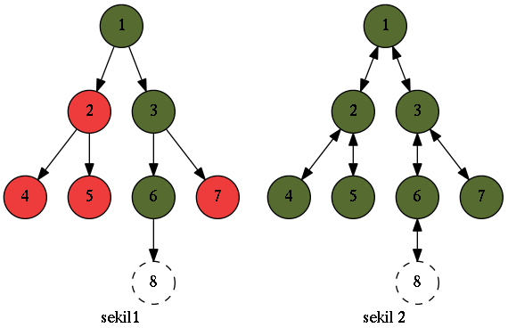

February 27, 2012 - Tagged as: haskell, tr.
Fonksiyonel programlamanın sorunlarından birine getirilmiş güzel bir çözümden bahsedeceğim biraz. Fonksiyonel programlamada veri yapılarımız immutable olduğundan güncelleme işlemleri problemli olabiliyor. Örneğin derin bir ağacı güncellemek gibi. En iyi ihtimalle root’dan itibaren eklediğiniz yeni node’a giden yoldaki tüm nodeları yeniden oluşturmanız(structural sharing deniyordu sanırım, şekil 1), en kötü ihtimalle de tüm ağacı yeniden oluşturmanız gerekir(şekil 2). Şekillerde kesikli çizgiyle belirtilmiş node’u eklemek için yeşil nodeları yeniden oluşturmamız gerek, kırmızılar ise aynı kalır.

Fonksiyonel programlamada bu kopyalama işlemlerinin önüne geçmek mümkün değil tabii ki ama çok güzel optimizasyonlar mümkün. Hakkında bir sürü makale var, yazıda yeri geldikçe linklerini vereceğim.
Yapılabilecek optimizasyonlardan biri, ağacı mümkün olduğunda sığ tutup, genişliğini fazla tutmak. Örneğin Clojure persistent map yapısı için böyle yapıyor1 Vector yapısı için de aynı şeyler geçerli ama concatenation gibi işlemler için başka optimizasyonlar da işin içine girdiği için işler biraz daha karışık2
Zipper yapısının yardımcı olduğu nokta, bir veri yapısında istenilen noktada minimum miktarda kopyalama işlemi yaparak değişiklik yapmak. Herhangi bir büyüklükte ve derinlikte bir ağaçta sadece tek bir node’u değiştirerek güncelleme yapabiliyoruz. Aynı imperative dillerdeki gibi.
Bunu şu şekilde yapıyoruz, şekil 1’deki ağacı şu hale getirdiğimizi düşünelim:
6. node root konumuna geldi ve bunda yapacağımız değişiklikler için sadece 6. nodeu kopyalamamız yeterli. İşte veri yapılarında değişiklik yapacağımız yeri root pozisyonuna getirmeye zip veya unzip, tekrar eski haline getirmeye de buna ne deniyorsa diğeri deniyor hehe. Bu hale getirdikten sonra eski haline getirmemiz için bu hale getirirken hangi yolu izlediğimizi kaydetmemiz gerek. Örneğin bu problem için ilk başta root’u 3. node yaptık, bir kere sağa gitmiş olduk yani:
Burda kesikli edge 3.node’a hangi node’dan geldiğimizi gösteriyor. Yapıyı bu hale getirmek için bir kere sağa gittiğimizi bildiğimize göre, eski haline getirirken şu anki root’un, kesikli node ile gösterilen node’un sağında olması gerektiğini biliyor olacağız. Daha sonra bir kere sola giderek 6. node’u root yapıyoruz, ki o da 2 üstteki resimde gösterilen durum. Bu aşamadan sonra 6. node’dan itibaren yaptığımız değişiklikler için sadece 6. node ve onun aşağısını değiştirmemiz gerekecek.
Güncellemelerden sonra veri yapısını ilk haline getirmek kolay, bu hale getirmek için sağa ve sonra sola gittiğimizi biliyoruz, 6. node’a hangi node’dan ve o node’a hangi node’dan geldiğimizi biliyoruz. 2 kopyalama işlemiyle eski haline getirebiliriz(6. node’a 3. node’dan geldik ve 6. node 3. node’un solunda olmalı vs. gibi).
(Burası pek açık olmadı gibi geldi ve ekleme yapmak istedim, yapıyı eski haline getirmemiz için bilmemiz gereken 2 şey var, bu haline getirirken her bir adım için hangi node’dan bu başka bir node’a geçtik(şekillerde kesikli oklarla gösterdim), ve geçmeden önce bu node’a göre geçtiğimiz node hangi pozisyondaydı, örneğin sağında mıydı solunda mıydı vs.)
Zipperlar hakkında farkedilmesi gereken birşey, kendilerinin ağaç formunda bir yapıya ihtiyaç duymuyor olması. Gerekli olan, bir yapıda değişiklik yapılmak istenen yeri minimum sayıda kopyalama yapabileceğimiz hale getirip, daha sonra eski haline getirebilmek. Bu normal bir liste de olur. Ben listelerden ve ağaçlardan zor/farklı olsun diye Haskell ile Trie yapısı için implement edeceğim.3
data Ord c => Node c = Node { wordp :: Bool
, nodeMap :: Map.Map c (Node c)
}Trie yapımızın her bir node’u bir Map tutuyor, bu map’ler benim kullanımım için her bir karakteri bir başka Node’a eşliyor, ama aslında karakter yerine Haskell’in Ord typeclass’ının herhangi bir instance’ı kullanılabilir.
insert :: Ord c => [c] -> Node c -> Node c
insert [] (Node _ nodeMap) = Node True nodeMap
insert (x:xs) (Node wordp nodeMap) =
Node wordp $ Map.insert x (insert xs (lookupMap x nodeMap)) nodeMapYeni bir kelime eklerken, kelimedeki her bir karakter için eğer yoksa bir node oluşturuluyor ve bu nodelar birbirlerine bağlanıyor. Klasik Trie implementasyonu. Kodun geri kalanının Zipperlar ile alakası olmadığı için buraya koymacağım, gist’den bakabilirsiniz.
data Ord c => Zipper c = Zipper [Node c] (Node c) [c]Zipper veri yapımız, ilk elemanı, şu anda root olan node’a gelene kadar gezdiğimiz nodeları(yukarıdaki şekillerde kesikli oklarla gösterilen nodelar yani), ikinci eleman şu anda root olan nodeu, üçüncü eleman da bu nodea gelene kadar takip ettiğimiz yolu tutuyor. Burda yolun sağ-sol olarak değil de bir karakter olarak tutulduğuna dikkat. Yani “önce c sonra a sonra d” harflerini gezerek gelmiş oluyor mesela.
currentNode :: Ord c => Zipper c -> Node c
currentNode (Zipper _ n _) = nBasit bir yardımcı fonksiyon, Zipper yapısından root node’u dönüyor.
go :: Ord c => c -> Zipper c -> Zipper c
go c zip@(Zipper vNodes trie@(Node _ nodeMap) cs) =
case cnode of
Nothing -> zip
Just x -> Zipper (trie:vNodes) x (c:cs)
where cnode = Map.lookup c nodeMapBuraya dikkat, gitmek istediğim karakteri şu anki root’un mapinden arıyorum, eğer o karaktere ait bir node yoksa kaldığım yerde kalıyorum(bu davranış isteğe bağlı, hata da verilebilir mesela), eğer varsa, şu anda bulunduğum node’u daha önce gezilmiş nodeların bulunduğu listeye bağlıyorum(kesikli okların olduğu liste), gittiğim karakteri de daha önce gezilmiş karakterler listesine ekliyorum, ve bulduğum node yeni root nodeum olacak şekilde yeni bir Zipper oluşturuyorum.
goUp :: Ord c => Zipper c -> Zipper c
goUp z@(Zipper [] _ []) = z
goUp (Zipper ((Node wordp nodeMap):nodes) node (c:cs)) =
Zipper nodes (Node wordp (Map.insert c node nodeMap)) csGeri dönmek istediğimde de, hangi harften buraya gelmişsem, o harfe bu node’u ekliyorum ve yeni root’um, gezilmiş node’ların olduğu listenin ilk elemanı oluyor. Eğer zaten en üst nodeda isem kaldığım yerde kalıyorum.
insert :: Ord c => [c] -> Zipper c -> Zipper c
insert c zipper@(Zipper vnodes node cs) =
Zipper vnodes (Trie.insert c node) csBu da Zipper için insert fonksiyonu, Zipper’ın root node’una ekleme yapmak için.
Modüllerin tam haline gistden bakabilirsiniz.
Bir ghci ateşleyip test yapalım:
Prelude> :load TrieZipper.hs
[1 of 2] Compiling Trie ( Trie.hs, interpreted )
[2 of 2] Compiling TrieZipper ( TrieZipper.hs, interpreted )
Ok, modules loaded: TrieZipper, Trie.
*TrieZipper> let t1 = Trie.insert "asdf" Trie.empty
*TrieZipper> let t2 = Trie.insert "blaaaaah" t1
*TrieZipper> t2
fromList ["asdf","blaaaaah"]
*TrieZipper> let z1 = Zipper [] t2 []
*TrieZipper> currentNode $ goUp $ goUp $ TrieZipper.insert "ikinciekleme" $ TrieZipper.insert "ilkekleme" $ go 'l' $ go 'b' z1
fromList ["asdf","blaaaaah","blikinciekleme","blilkekleme"]Süper! Ne yaptığıma bakalım, ilk önce bir Trie oluşturup iki tane kelime ekledim, daha sonra Trie’da önce b sonra l harfine ilerledim. Yeni root artık burası, burada yaptığım değişiklikler için sadece bu node kopyalanacak. Buraya iki kelime ekledim ve iki kere yukarı çıkıp yapıyı eski haline getirdim ve değişikliklere baktım.
Zipper olayı budur. Bu arada asıl makalenin linkini vermemişim: Functional Pearl: The Zipper, Gérard Huet. Şurda da meraklısı için Zipperlarla alakalı güzel bir hikaye var :) .
Bundan sonra bir finger tree implementasyonu yapacağım sanırım. Bu arada, fonksiyonel programlamaya ve fonksiyonel veri yapılarına meraklı olan varsa diye, süper kaynaklar keşfettim: Functional pearls, Purely Functional Data Structures ve Okasaki’nin diğer makaleleri(PFDS haskell kaynak kodu) ve tam olarak FP ile ne kadar alakalı olduğunu bilmesem de genelde FP dillerinde görmeye alışkın olduğumus continuationlarla alakalı yazılar
Dün eklemeyi unutmuşum: Clojure Zipper veri yapısı,Scala için de şöyle birşey varmış.
Kaynak kod. İlgili makaleler: Ideal hash trees: Phil Bagwell, Making data structures persistent: J. R. Driscoll, N. Sarnak, D. D. Sleator, R. E. Tarjan. Makaleleri okurken bir yanda Clojure kaynak kodunu açarsanız çok yardımcı olacaktır, ben öyle yapıyorum hep.↩
Kaynak kod. İlgili makale: Fast Functional Lists, Phil Bagwell. Clojure’dan sık sık bahsediliyor bu yazıda.↩
Haskell’siz FP yazısı mı olurmuş :P . Bu arada trie yapısını ne kadar sevdiğimi söylemiş miydim? Bir yıl kadar önce şu yazıdaki çözümlerden biri için C ile implement etmiştim, daha sonra bugüne kadar sürekli bu yapıdan farklı yapılar türeterek farklı amaçlar için kullandım.↩